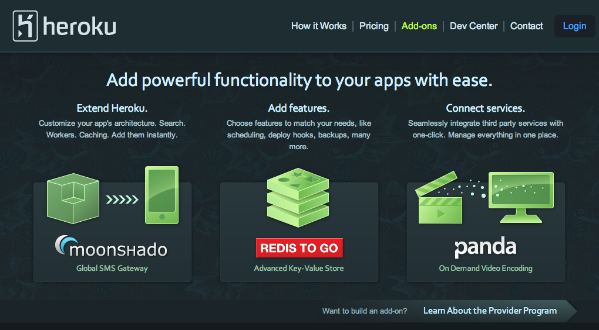
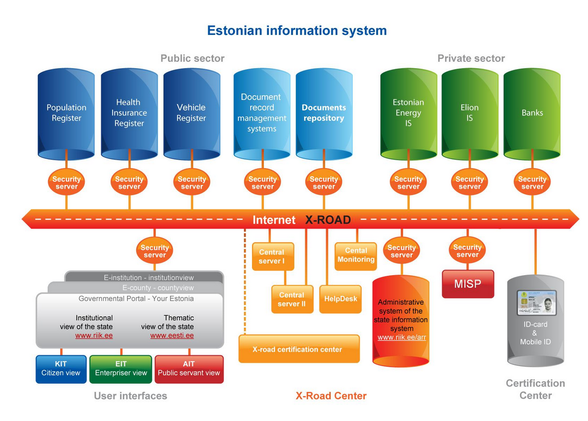
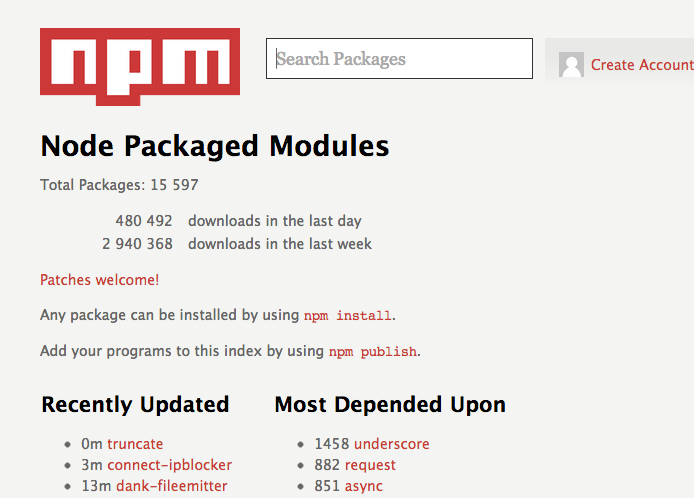

Government.js
Building the JavaScript Party
Don't worry, this talk isn't really about politics
@maxogden, jsconfeu 2012
@codeforamerica with Boston Mayor Tommy Menino
Governing Magazine
Strategy 1:
Fixing government from the inside


Strategy 2:
Fixing government from the outside


Strategy 3: Government as a Platform
(read this essay)civic startup

sadly this is a recent photo
how to hack this system?
low cost procurement
no need for a competitive bidding process
lets get idealistic
oauth provider
just as easy as twitter/instagram/foursquare
Heroku Add-ons for Government!?
Heroku Add-ons for Government!?
case study
Estonia
#focas12
"ribs and spine" identity service
the Estonian government didn't create programming resources – it acted as a smart purchaser
Governments !== software companies
Estonia is small, like a medium sized city
Who will advocate for good software?
I thought bureaucrats were evil!?
MC HAMMER, YA'LL. THAT'S WHO
Government will always change slowly.
but!
Government technology is changing the least-slowly!
JS has the fastest growing community
So we can't change all governments overnight...
However!
We can define a platform for fixing government.
And there are cities interested in this!
Find a bug your government and build a product to fix it.
This is what a JavaScript political
party would look like: a group of people creating beautiful solutions inside of an ugly system.